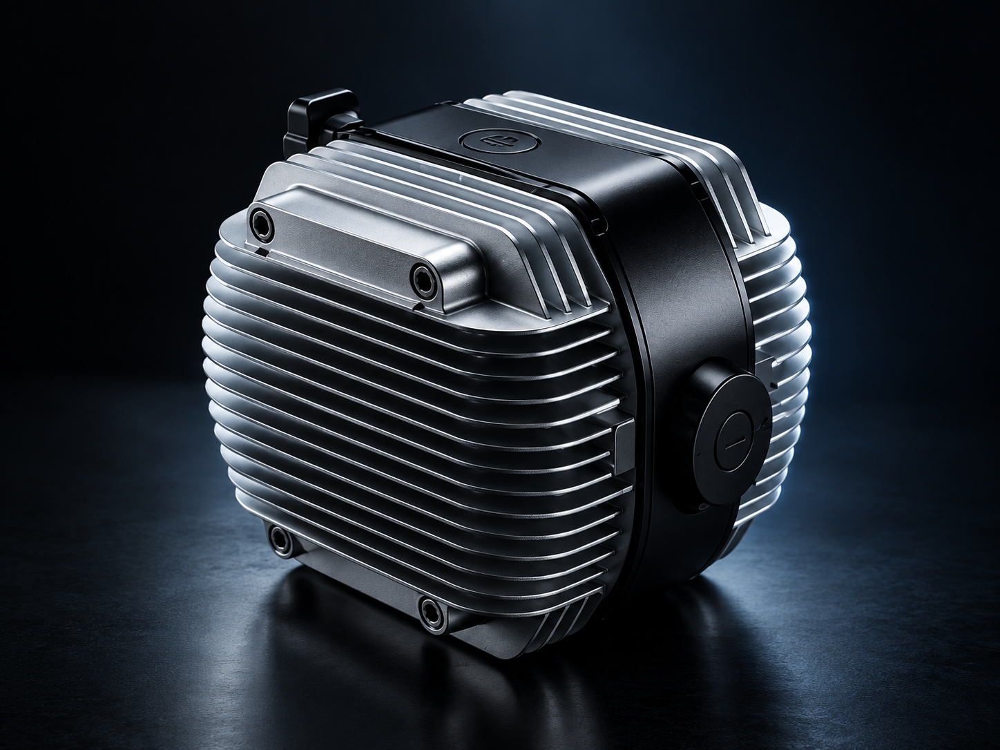
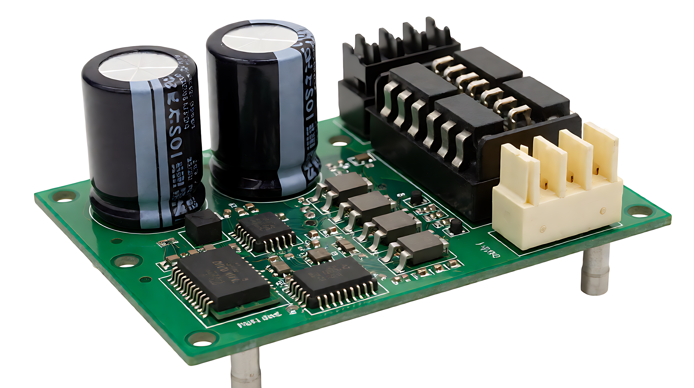
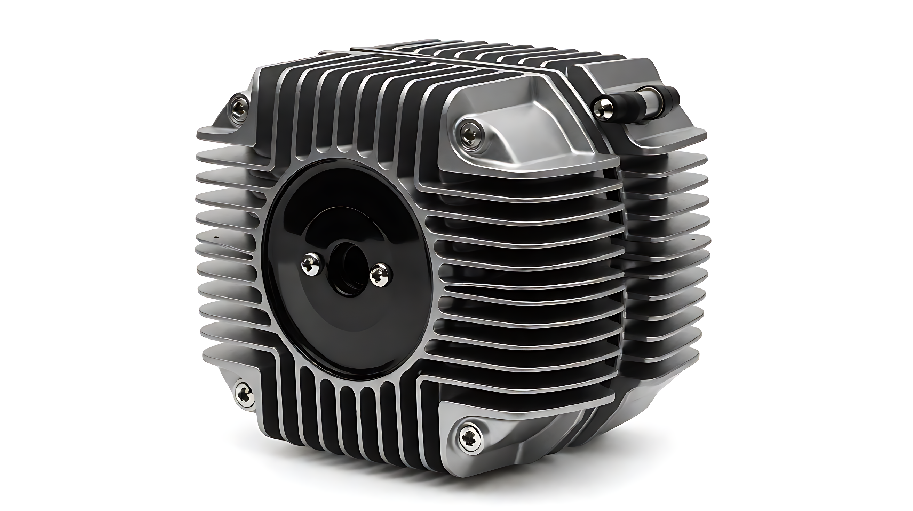
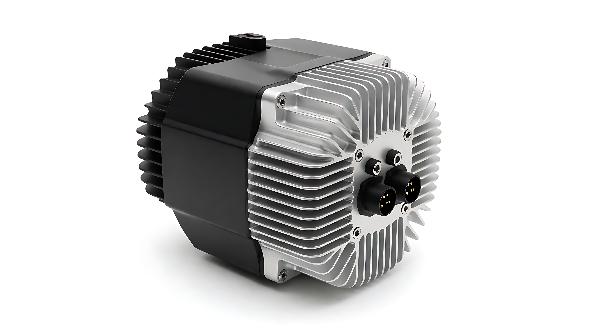

PXID / MOTOR CONTROLLER
精确控制，
每一程动力。
从骑行指令到动力输出，了解控制器的系统角色、硬件构成与整车适配思路。
外观为概念渲染；实际外形、接口与规格以项目资料为准。

01 / SYSTEM ROLE
连接输入与动力的
控制中枢
控制器位于车辆电能路径和控制信号的交汇处。先看清各节点的关系，再讨论具体接口、策略和标定，才能把整车体验落到实际硬件上。
一般系统关系示意；不是本产品线束图。节点与接口以选定型号资料核对。
02 / HARDWARE ARCHITECTURE
从板面，读懂控制架构。
把外壳打开，板面包含连接、供电、控制与功率处理所需的不同区域。下图用于展示阅读方式；缺少该型号的 BOM 与板图，暂不把可见封装指定为主控、驱动或功率器件。

概念示意 原站独立图片，非实际板件照片；红色热点只对应图中可见外观，不代表器件功能鉴定。
连接器外观
图中右侧可见插接结构。接口的电源、信号定义及针脚顺序，需按实际线束图和选定板件核对。
工程资料待补：接口定义、线束图控制算法（如 FOC）属于策略能力，不是图中某颗可以凭外观辨认的“FOC 芯片”。
03 / RIDING RESPONSE
从起步到巡航，
关注每一次响应。
骑行体验不是一条孤立参数曲线。输入、控制目标和整车约束需要在不同工况下共同标定。选择场景，查看项目讨论时应关注什么。
起步：先建立平顺的第一感受
讨论转把输入、起步扭矩与限流边界的匹配方式，避免只用“更快”定义起步体验。
- 项目输入
- 电机资料、整车载重、目标起步感受
- 验证方式
- 样车试骑与实际电流、温升记录
场景内容是适配讨论框架，不代表所有功能在当前型号上已实现；这里不显示虚构波形或实测值。
04 / PROTECTION LOGIC
保护，必须能说明
触发与恢复。
旧站列有过流、过压、欠压、过温等保护方向。正式页面需要针对选定型号补齐检测点、动作阈值、处理方式和恢复条件，不能只罗列术语。
- 01监测
电流、供电与温度等输入项，按实际硬件采样能力核对。
- 02判定
结合阈值、持续时间与当前工况判断异常。
- 03处理
限制输出或停止驱动的策略，需针对型号明确。
- 04恢复
解除条件、故障记录与复位方式需由测试资料说明。

外观概念图 / 非温升测试照片05 / THERMAL STRUCTURE
散热，从结构开始考虑。
散热片只是可见的外部形态。真实热路径还取决于内部接触、壳体材料、安装面、气流及持续负载条件。
无对应型号温升记录，当前不展示温度数据或散热提升百分比。
06 / INTERFACES & SOFTWARE
让控制器进入
整车信息链路。
通讯接口决定控制器如何与仪表、整车部件和调试工具协同。旧站提到 CAN、一线通和 OTA；本地资料尚不能证明具体型号、协议版本或远程升级链路。
信息关系示意；连线表示讨论方向，不代表选定型号已具备全部接口。
07 / PERFORMANCE & VALIDATION
性能与可靠性，
用条件和证据说话。
本地项目没有可核验的型号数据表、实测曲线或试验报告，因此这里保留阅读与验证框架，不绘制假数据。
一条曲线，至少需要四个条件
- 明确控制器与电机型号
- 说明电池平台与供电状态
- 标注负载、速度与环境温度
- 区分持续值、峰值和测试方法
一项验证，需要可追溯对象
- 样件版本与测试日期
- 测试项目、标准与工况
- 报告编号或原始记录
- 适用产品范围与结论
效率、负载响应、温升、防护、振动与 EMC 等旧站描述，待提供型号对应的条件和报告后再公开。
08 / SELECTION
先定义整车，
再确定控制器。
当前没有可信的型号对照表，不能用概念图上印的电压或旧站的范围替代实际规格。以下信息能帮助项目团队筛选候选版本。
型号、持续／峰值电流、尺寸、防护与认证，待正式规格书后补成可比较的型号表。
09 / INTEGRATION
从需求输入，到样车验证。
以下是与项目团队讨论控制器适配时的建议顺序；具体开发、交付与服务范围需双方确认。
- 01
需求输入
车型、电池、电机与目标工况
- 02
接口核对
线束、仪表协议与安装空间
- 03
样件匹配
明确候选硬件与软件版本
- 04
参数标定
记录关键策略与整车边界
- 05
样车验证
按约定工况检查响应与保护
10 / APPLICATION SCOPE
面向不同车型，
先核对适配边界。
旧站提及通勤、摩托和运营车辆等方向，但未提供对应型号与公开案例。本地预览只展示项目讨论时的差异，不声明已有量产项目。
关注低速平顺、能耗与日常使用边界。
关注输出、连续运行与散热条件。
关注接口、诊断与维护流程的配套范围。

11 / TECHNICAL RESOURCES
让资料，支持每一步判断。
本地项目尚未发现可公开下载的控制器规格书、安装图或接口定义。以下是适配通常需要的资料项；文件到位前不放空下载按钮。
12 / FAQ
常见问题
针对当前可确认的项目准备事项作答；型号功能仍需以正式资料为准。
启动控制器适配，需要先提供什么？
建议准备车型、电池平台、电机资料、目标工况、仪表与线束信息。团队才能据此核对候选硬件和适配范围。
可以直接沿用现有电机和线束吗？
需要逐项核对电机传感器、连接器、针脚、供电与通讯定义；仅凭外观不能判断兼容。
固件是否支持远程升级？
旧站提及 OTA，但本地资料未标明适用型号、终端、网络和失败处理。请在具体方案中分别确认本地刷写与远程升级能力。
效率、电流和防护数据为什么没有列出？
这些数据需要对应型号、测试条件与报告。资料确认后才能发布可比较的参数表。
START A PROJECT
带上整车需求，
一起讨论适配方案。
提供车型、电池平台与电机资料，从接口和工况开始建立控制器匹配清单。